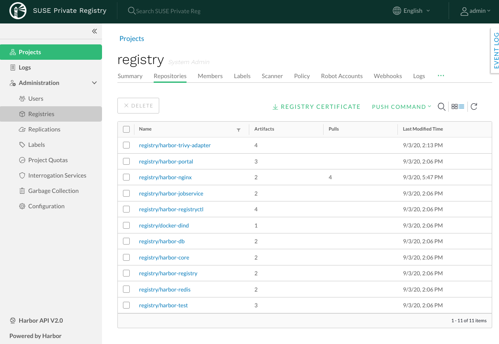
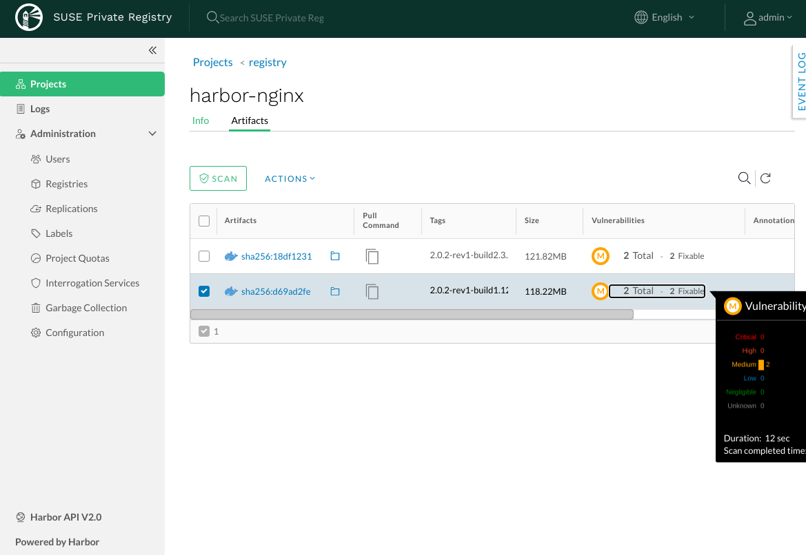
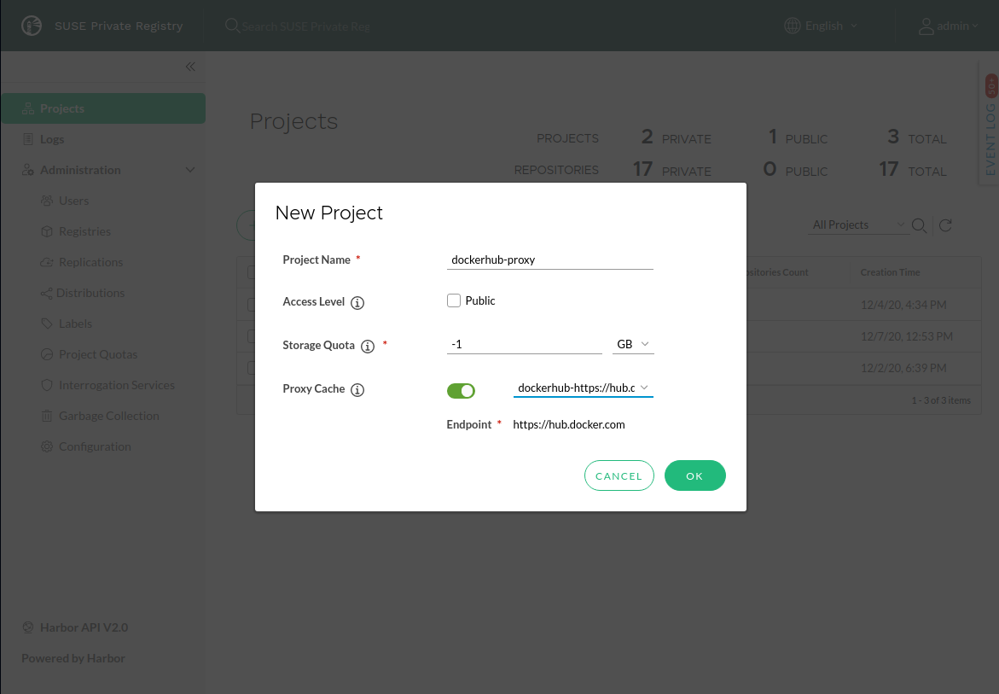

After logging in, a harbor installation lands on the Projects page. Project pages are the individual "tenants" or "organisations" that the SUSE Private Registry can host.
For each one of those, Access Control, Security Policies, Webhooks or Accounts can be defined.
Access (push/pull) and other event logs can be accessed. A Project can be populated by replicating another registry, like for example registry.suse.com.
Here’s how an example harbor installation with mirroring itself from registry.suse.com would look like:
|  |
Assume there’s a "hello-world" image in your current local docker registry:
> docker images REPOSITORY TAG IMAGE ID CREATED SIZE hello-world latest bf756fb1ae65 6 months ago 13.3kB
Let’s assume the value of <core_fqdn> is core.harbor.domain.
Log in to new Harbor based Docker registry. Use the correct administrator password, refer to: [install-passwords].
docker login core.harbor.domain -u admin
Tag an existing image:
docker tag hello-world core.harbor.domain/library/hello-world:latest
Note the "library" part. That’s a project you will be pushing the image to. Look how to manage projects in the upstream documentation.
Push the image to your Harbor registry:
> docker push core.harbor.domain/library/hello-world:latest The push refers to repository [core.harbor.domain/library/hello-world] 9c27e219663c: Pushed latest: digest: sha256:90659bf80b44ce6be8234e6ff90a1ac34acbeb826903b02cfa0da11c82cbc042 size: 525
Now go to Harbor web UI and you can see the new image is stored under library project as library/hello-world
Helm Charts in SUSE Private Registry requires Helm v3, which is not a default option for SUSE CaaS Platform 4.5. Helm v3 is a client only solution so you only need it on the machine that you launch the installation from. Read about installing of Helm v3 in the SUSE CaaS Platform Administration Guide. In order to use helm, you need to Log into OCI-compatible registry of Harbor:
> helm registry login core.harbor.domain Username: admin Password: Login succeeded
After logging in, run the helm chart save command to save a chart directory that prepares the artifact for pushing:
helm chart save my-chart core.harbor.domain/library/my-chart
Now you can push the chart to the Private Registry:
helm chart push core.harbor.domain/library/my-chart:version
Go to the Helm web UI and you can see the chart located under library project.
Read more in the upstream documentation.
You can set up your Kubernetes Cluster to use your newly deployed SUSE Private Registry as a source of Images. Read more about using SUSE Private Registry for 4 cluster. Following setup is based on Specifying ImagePullSecrets on a Pod section.
Copy your generated CA certificate to all nodes of Kubernetes cluster so that container daemons trust it when pulling images from the private registry. It’s possible to install them to the configuration directory specific to the container engine you are using, e.g.
/etc/docker/certs.d/for docker.Or copy them system-wide - repeat this for all your Kubernetes nodes:
scp harbor.ca root@$kubernetes_node: ssh root@$kubernetes_node cp harbor.ca /usr/share/pki/trust/anchors/ update-ca-certificates systemctl restart crio
Note
Notice that example above is restarting CRI-Oo service which is the container engine used by SUSE CaaS Platform.
Create a Secret of
docker-registrytype. Use the right own values for docker-server and docker-password, so that they match your environment:kubectl create secret docker-registry registrycred --docker-server=core.harbor.domain --docker-username=admin --docker-password=Harbor12345
Now, you can create pods which reference newly created registrycred secret by adding an imagePullSecrets section to a Pod definition. Like this:
apiVersion: v1 kind: Pod metadata: name: foo spec: containers: - name: foo image: core.harbor.domain/library/hello-world:latest imagePullSecrets: - name: registrycredSave the code above into some yaml file, e.g.
hello-pod.yamland create the new pod that pulls the image from your private registry:kubectl apply -f hello-pod.yaml
Note
It is possible to add ImagePullSecrets to a service account, so it is not necessary to pass it to each Pod.
Read about it in the upstream documentation.
SUSE Private Registry provides static analysis of vulnerabilities in images through the Open Source project Trivy. No other scanners are supported.
Trivy is enabled by default when deploying the Helm chart and can be disabled by editing the harbor-values.yaml before deployment:
trivy: # enabled the flag to enable Trivy scanner enabled: true
Log in to the Harbor interface with an account that has at least project administrator privileges. To see the vulnerabilities detected in repository artifacts, click the Repositories tab and then click on a repository. For each artifact in the repository, the Vulnerabilities column displays the vulnerability scanning status and related information.
|  |
To run a vulnerability scan, select the artifacts to scan and then click the Scan button. You can optionally select the checkbox at the top to select all artifacts in the repository.
Read more about vulnerability scanning in the upstream documentation.
By default, Notary, the solution for managing the content trust is installed and enabled when Harbor is installed using the Helm chart.
This allows users to store signed images in SUSE Private Registry, and in turn they have the option to use only signed images from the client applications.
To use command line tools together with the Notary signing support in Harbor:
Enable Docker Content Trust
Set these environment variables on your client:
export DOCKER_CONTENT_TRUST=1 export DOCKER_CONTENT_TRUST_SERVER=https://<notary_fqdn>
Note
When
DOCKER_CONTENT_TRUSTvariable is set to 1, you cannot pull unsigned images from any sources. So for the time you want to pull some unsigned image (so you can push it signed into your local registry), it’s necessary to unset the variable, or set its value to 0.Make sure your certificates are correctly installed on your system. Refer to: the section called “Transport Layer Security (TLS) Setup”.
Push a signed Image to the private registry
> export DOCKER_CONTENT_TRUST_SERVER=https://notary.harbor.domain > export DOCKER_CONTENT_TRUST=1 > docker push core.harbor.domain/library/alpine:latest The push refers to repository [core.harbor.domain/library/alpine] 50644c29ef5a: Pushed latest: digest: sha256:a15790640a6690aa1730c38cf0a440e2aa44aaca9b0e8931a9f2b0d7cc90fd65 size: 528 Signing and pushing trust metadata You are about to create a new root signing key passphrase. This passphrase will be used to protect the most sensitive key in your signing system. Please choose a long, complex passphrase and be careful to keep the password and the key file itself secure and backed up. It is highly recommended that you use a password manager to generate the passphrase and keep it safe. There will be no way to recover this key. You can find the key in your config directory. Enter passphrase for new root key with ID a69b97e: Repeat passphrase for new root key with ID a69b97e: Enter passphrase for new repository key with ID 5419081: Repeat passphrase for new repository key with ID 5419081: Finished initializing "core.harbor.domain/library/alpine" Successfully signed core.harbor.domain/library/alpine:latest
You will be asked for the passhprases for a new root and new repository key. The root key only need to be set once.
Log into Harbor Portal UI, browse to the image you have just pushed and you will see an icon indicating that the image is signed

You can set up SUSE Private Registry to act as a caching proxy for other private or public registries. When used with Docker Hub for example, this can greatly reduce the impact that Docker Hub’s rate limiting policy can have on your workload.
Note
Currently, the proxy cache feature can only be used with Docker Hub and other Harbor registries.
Log in to the Harbor interface with an account that has administrator privileges. First, you need to configure the remote registry as a registry endpoint under the Registries tab.
 |
The proxy cache feature can be enabled at project level, when a new project is created. Enabling the Proxy Cache box and selecting the previously created registry endpointcauses the project to act as a caching proxy for all images pulled from the project.
|  |
Read more about the proxy cache feature in the upstream documentation.